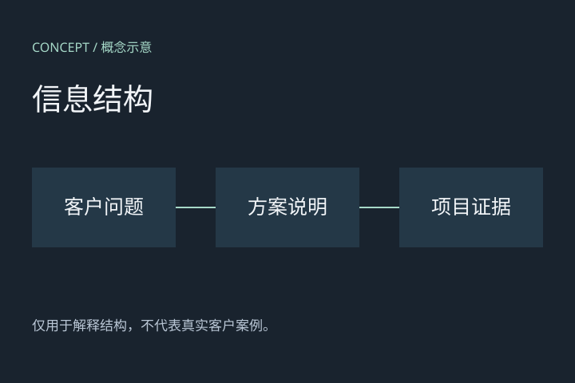
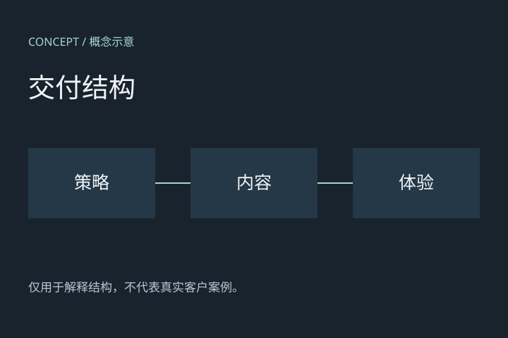

标准方案
¥120,000示例服务范围：策略、内容与体验设计。
商业提案 / 可复用交互
交互用于解释关系、展开证据和比较方案。此页使用虚构内容，展示可独立复用的组件行为。
这是中性的技术示例，不是客户案例，也不限定提案的品牌、主题或配色。
01 / 循环机制
步骤文字保持静止，箭头和粒子只表现流向。暂停动效后，关系仍然完整。
这里的四步仅为通用示例；使用时替换为有依据的业务机制。
02 / 证据展开
点击任一概念图放大。窄屏改为顺序展示，触屏无需悬停。


03 / 实施排期
示例排期：先确认方向，再设计制作，最后验证与交接。
| 工作 | 阶段一 | 阶段二 | 阶段三 |
|---|---|---|---|
| 策略与信息结构 | 梳理／确认 | — | — |
| 内容与设计 | 准备 | 制作／反馈 | 完善 |
| 验证与交接 | — | 准备 | 检查／交接 |
客户配合：提供资料 → 确认方向 → 集中反馈。正式日期和范围应按项目确认。
04 / 功能演示
演示数据仅保留在当前页面内存中，刷新即清空，不发送给任何服务器。请勿填写个人或真实客户资料。
选择产品和场景后生成摘要。
05 / 同屏比较 · 虚构价格
桌面上下滚动切换两种价格；手机和静态模式同时展示。两种状态也可直接通过按钮切换。
示例服务范围：策略、内容与体验设计。
虚构优惠示例；范围保持一致。
示例数字不对应任何客户报价，不能直接用于商业承诺。
06 / 详细范围
示例交付：问题梳理、信息结构图和内容方向说明。
示例交付：内容样稿、页面设计及交互说明。数量与格式由具体项目确认。
示例交付：已验证的页面、检查记录和使用说明；不代表已部署或客户已验收。